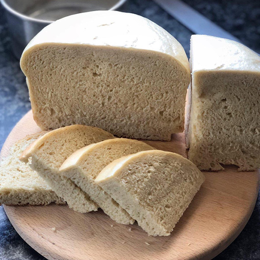

uJeqe

Description
UJeqe is a traditional South African dish which is also known as steamed bread. This delicious and filling bread can be eaten on its own or paired with various other dishes- ubhontshisi, beef stew, chakalaka and so on. So dive right in and make uJeqe omnandi ontofontofo!
Ingredients
- 5 cups flour
- 10g sachet instant yeast
- 1 tsp salt
- 4 tbsp sugar
- 1/4 cup oil
- 2-3 cups warm water
Steps
- In a large bowl, mix all dry ingredients together.
- Add oil to 2 cups of warm water.
- Add oil and water to the dry ingredients, then knead to form a dough.
- If the dough is too dry, add 3rd cup of water a bit at a time until the dough is soft, smooth, sticky, and stretchy.
- Pour a little oil onto the dough, then place into a bowl (this is to avoid sticking). Cover and leave to rise for about an hour.
- Punch the dough down to deflate it and shape into a ball, then place it in a greased heatproof bowl.
- Bring water to a gentle boil in a pot, then place the bowl inside the pot.
- Cover with a lid and cook on medium heat for about an hour or until fully cooked through.
- Let it cool down then slice it up and enjoy!